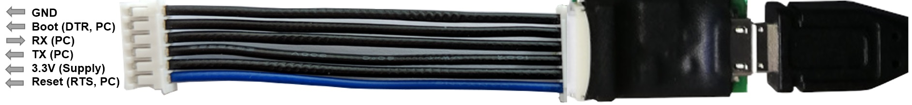
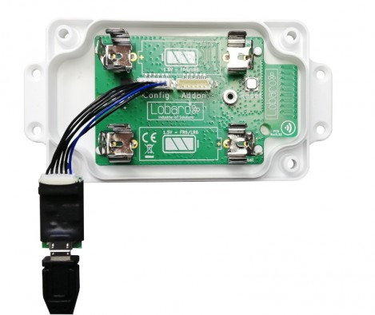

Lobaro USB configuration adapter

The Lobaro USB configuration adapter connects the configuration serial uart of our hardware to a PC. It is useful for:
- Sensor initial configuration, e.g. network parameters
- Viewing firmware log/debug diagnostic output
- Firmware updates
using our free Lobaro Maintenance Tool PC software.
Wire orientation
The blue wire is not consistent the RST/RTS pin(1) and may be inverted on some adapters, e.g. being the GND wire pin(6). Check the orientation of the adapter with the picture above to determinate the actual pin ordering and do not simply rely on the the wire color coding alone!
USB Driver
The CP2102 USB driver needs to be installed before using it.
Hardware Connection (LoRaWAN Sensors)

The USB adapter uses a six-wire JST-ZH series connector for attaching to Lobaro hardware at the config connector.
Boot0of Lobaro sensors is connected toDTRline of the PC uartReset(active low) of Lobaro sensors is connected toRTSline of the PC uart
Note
Normally the handling of these uart control is done automatically by the Lobaro PC tool.
When using an alternative uart terminal tool (e.g. HTERM) make sure you setup the RTS and DTR lines correctly or simply cut the DTR/RTS wires from the USB adapter if the reset and/or bootloader functions are not needed.
Default UART Configuration
The default 8N1 UART configuration that is used by all Lobaro devices on the "Config" port:
| BaudRate | 115200 |
| Parity | No Parity |
| StopBits | OneStopBit |
| DataBits | 8 |
DTR control line
Low/true=> Run Firmware after Reset (Default since BOOT0 has internal pull-down)High/false=> Run Bootloader after Reset
RTS control line
High/false=> Run Firmware / Bootloader (Default since RESET has internal pull-up)Low/true=> Chip in RESET mode (not running)
Adapter Schematic